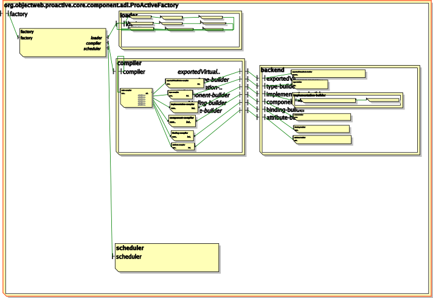
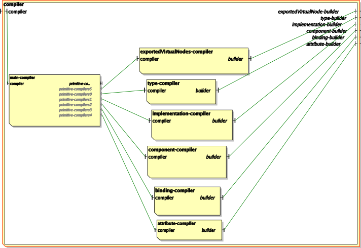

This package and sub-packages provide a customization of the standard
Fractal ADL for ProActive. It uses standard classes and .fractal files
from the fractal-adl-2.4-SNAPSHOT.jar in the /lib directory, and from
a user point of view, main differences between the standard Fractal ADL
parser and this one are:
-
A different Launcher class that can work with ProActive
deployment descriptor and GCM Application descriptor.
- A customized factory and compiler.
-
A registry that can store references to instantiated components
(not used for the moment).
-
Virtual nodes in the ADL can find a mapping in the ProActive
deployment descriptor or in the GCM Application descriptor.
-
Virtual nodes can be exported and composed; this allows
colocation of processes.
- The dtd is specific to ProActive.
The architecture of the Fractal ADL has been modified as follows:
- The factory specifies the new compiler to use:

-
The compiler has a new exportedVirtualNode compiler, a custom
implementation compiler that considers virtual nodes, a new
exportedVirtualNode builder and a custom implementation builder
that handles virtual nodes and stores component instances into
a registry (not yet implemented):

@author The ProActive Team